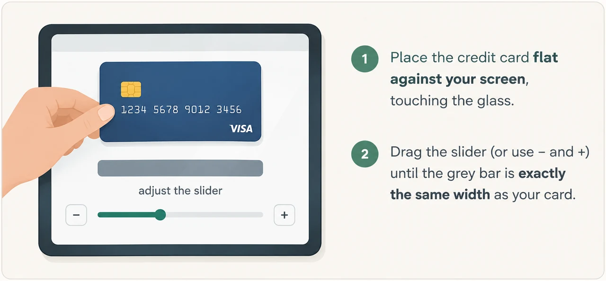
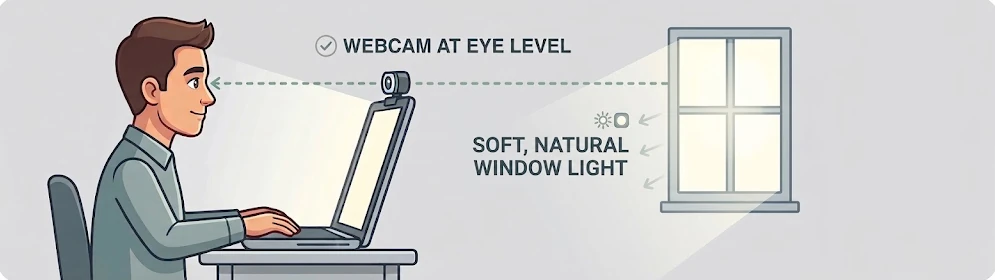
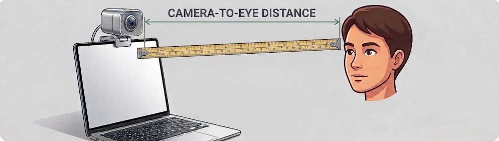

Webcam eye tracking
This uses your webcam to work out where you're looking on the screen. It takes about five minutes: a short setup, a camera check, a 30-second calibration and a 30-second accuracy check. Only the estimated gaze position and your answers to the questions are recorded. No video leaves your computer.
You’ll need: a bank or ID card (to measure your screen) and a tape measure or ruler (to measure how far you sit from the camera). At the end, you’ll download your data files and email them to the researcher.
Set up · 1 of 5
These help describe who took part. Every question is optional: skip any you’d rather not answer.
Set up · 2 of 5
Webcam tracking quality depends a lot on the hardware, so we note what you're using. If you're not sure, leave it blank.
Once the camera is on, its name (as your browser reports it) and basic system details (browser, operating system, graphics chip, screen) are also saved with your data.
Set up · 3 of 5
You need to see the dots clearly, but glasses reflect light and can confuse the tracker. Your answers tell you what to do, and are saved with your data. You can skip any question.
Set up · 4 of 5
Any bank card or ID card works as a ruler (they're all the same size). This lets us report accuracy in real-world units.

Set up · 5 of 5
Webcam eye tracking is only as good as the setup. These five things make the biggest difference:

When you press the button, your browser asks to use the camera. Choose Allow.
Camera check
Sit comfortably, face the screen and hold still. Continue unlocks when your face is found and you've held still for a moment.

Mirrored view. The box turns green when your eyes are inside it.
Data quality
| Point | Target x,y | Accuracy | Precision | Valid n |
|---|
Your data
Validation after Brand, Diamond, Thomas & Gilbert-Diamond (2021), Behavior Research Methods, 53(4), 1502–1514: 12-point 4×3 grid, each target shown for 2000 ms with a 250 ms blank between targets, first 100 ms after onset pruned; accuracy = mean offset, precision = RMS spread. Viewing distance: the participant's tape measurement when given; otherwise estimated from the distance between the eyes in WebGazer's face mesh (average adult interpupillary distance, assumed camera field of view).
Fixation identification
| Min fix. (ms) | AOI (w×h px) | TP | FP | FN | TN | Sensitivity | Specificity |
|---|
Your data
Fixation-identification task and ROC after Brand et al. (2021): 2 targets among 16 distractors, click = ground truth; fixations via an Engbert & Kliegl (2003) velocity detector (λ=6, median-based SD); TP/FP/FN/TN scored within a 500 ms window of each click across 8 AOIs and 100/150/275 ms minimum fixation durations.
Launcher
Finished
The camera is off.
Once you’ve sent the email, you can close this tab.
Next
Press Enter to start
The first time, this can take 10–20 seconds. Please don't refresh.